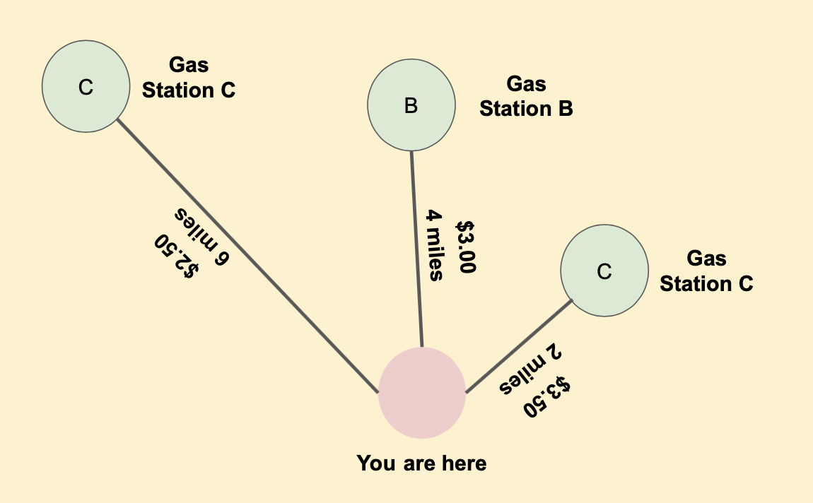

Not sure where to start? We got your back! See below for an example of a math modeling paper (developed by yours truly) and a template for your team to get started.
Don't worry if you don't have a plan! The M3J modelers and mentors are always here to help if you ask! Email us at any time, or feel free to use Discord or Zoom to contact us during the event.
Attached is the prompt M3J some problem writers answered in a sample paper at Mass Academy. This is not the official 2021 Math Jam prompt. For this year's prompts for the Junior and Senior division, check out the 2021 Math Modeling page.
Most drivers have a "usual" region in which they do most of their driving. However, gas prices may vary widely so that gas may be substantially cheaper somewhere other than within that usual region. Would it be more economical to go to a station outside the usual region to buy gas? Thus, the general question we wish to address is, "How might we determine which gas station is the most cost-efficient?"
You drive to school every day. On the route you take from home to school, there are several gas stations. Unfortunately, the prices on your route are always high. A friend tells you she buys her gas at a station several miles off your normal route where the prices are cheaper. A diagram of the gas stations nearby and their prices are shown below:

Which gas station would be the most economical for you to go to?
Not sure what to write in your paper? No worries! Some Mass Academy students answered a sample prompt in this math modeling report. Feel free to use this as a starting point or template for your own work to guide you in the right direction! Heads up though, this is not the most accurate, well written, or creative solution out there! This is just here as an example for how a math modeling paper and judging would look like. I'm sure you could think of several better solutions to this problem.
Please note that you cannot copy and paste any content from this paper into your own. View the paper on Google Docs here.
Not sure where to start with your paper? No worries! Event runners have organized this example for what sections your paper can include. Please note that you do not have to cite this template in your citations, but you should remove each section description before submitting your paper. If you decide not to use this template, please make sure you include all of the sections outlined in the template in your own paper. View the paper on Google Docs here.